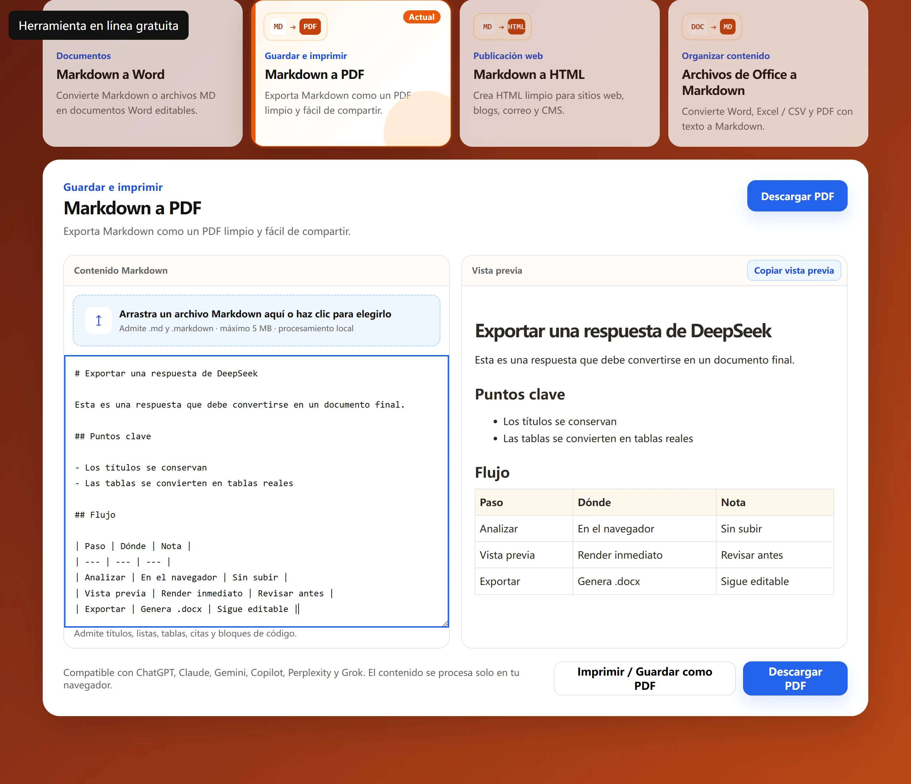

IA a PDF
Convertir una respuesta de IA en PDF
El PDF es útil cuando un informe, un plan de estudio o un esquema generado por IA necesita una maquetación estable para compartir, imprimir o archivar.

Tres pasos
- Copia la respuesta de la IA con sus encabezados y listas.
- Pégala en Markdown a PDF y examina la vista previa.
- Descarga el PDF y comprueba los saltos de página antes de compartirlo.
Cuándo el PDF es la elección correcta
- Enviar un informe de solo lectura a un cliente o un colega.
- Archivar notas de investigación con una maquetación consistente.
- Imprimir una guía de estudio, una lista de verificación o el resumen de una reunión.
Límites que conviene revisar
Las tablas muy anchas, los diagramas, las imágenes remotas y las líneas de código largas pueden exigir ajustes. Si los colaboradores deben editar el texto, exporta a Word.
La conversión se ejecuta en tu dispositivo. Aixuno no sube la respuesta pegada a ningún servidor.
Qué contiene realmente el PDF exportado
- Páginas A4 verticales con márgenes laterales de 12 mm, para un bloque de texto acorde a un informe estándar.
- Un número de página con el formato
1 / 4en la esquina inferior derecha de cada página. - Texto real, no una imagen: el archivo se puede buscar y copiar.
Cuándo el PDF es la elección equivocada
- Quien recibe debe editar o comentar: manda Word.
- La respuesta es un borrador de trabajo que seguirá cambiando.
- El contenido depende de tablas anchas: el PDF no puede reajustarlas, las columnas se comprimen.
Comparación con otras rutas
| Ruta | Texto seleccionable | Interfaz del sitio eliminada | Números de página |
|---|---|---|---|
| Imprimir la ventana del chat a PDF | Sí | No — encabezados y burbujas se quedan | Solo si el navegador los añade |
| Captura de pantalla guardada como PDF | No | Sí | No |
| Aixuno Markdown a PDF | Sí | Sí — solo se maqueta tu contenido | Sí, n / total |
Preguntas sobre el PDF resultante
¿El PDF exportado se puede buscar?
Sí. El resultado es texto real y no una imagen fija: se puede buscar y copiar.
¿Puedo cambiar el tamaño de página?
La versión actual exporta solo A4 vertical. Apaisado y márgenes personalizados aún no están disponibles.
¿Los números de página se añaden automáticamente?
Sí, con el formato 1 / 4 en la esquina inferior derecha de cada página.
Si el PDF no se ve bien
- Una página queda casi vacía.Las citas o bloques de código largos e ininterrumpidos empujan el contenido hacia abajo; divídelos en párrafos más cortos.
- Una tabla ancha se corta.El A4 vertical deja unos 186 mm de contenido. Las tablas más anchas exigen menos columnas, o un tratamiento apaisado en otra herramienta.
- Las fuentes cambiaron.La exportación sigue el renderizado por defecto del navegador: el PDF coincide con lo que mostraba la vista previa, no con la fuente de la plataforma de origen.